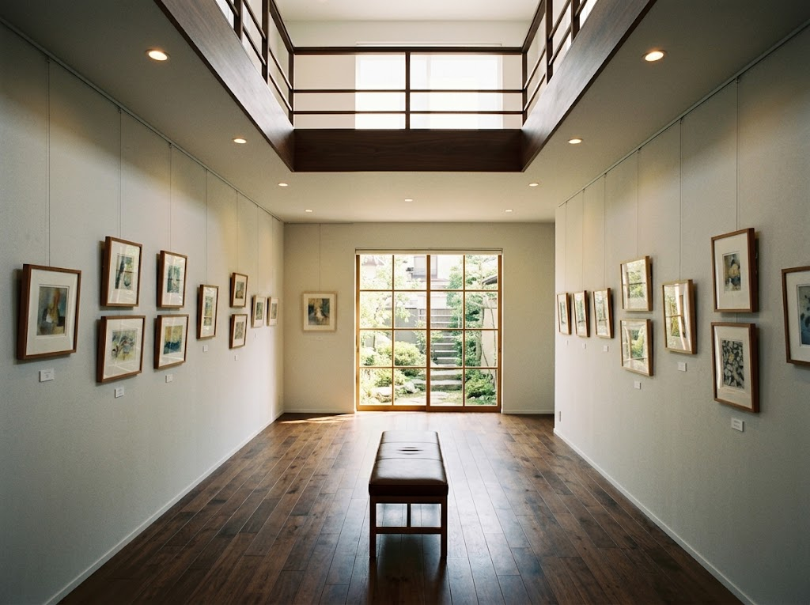
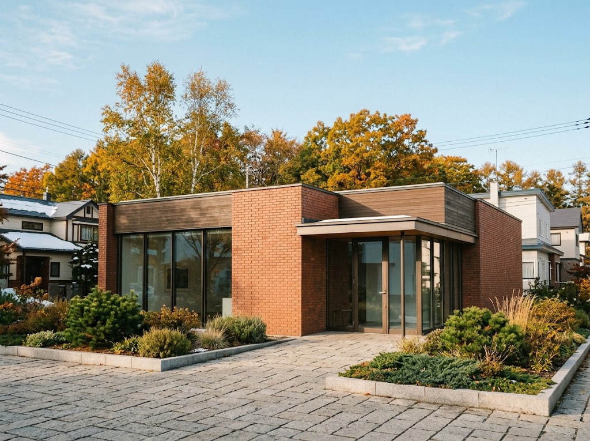

三岸好太郎の代表作を中心に、約249点を所蔵しています。常設展示に加え、年2回の特別展を開催。作品だけでなく手紙やスケッチなどの資料も豊富で、画家の生涯と制作の過程をさまざまな角度からたどれます。

所蔵作品は約257点。油彩画、水彩・素描、版画と多彩な作品を、一階と二階から見渡すように鑑賞できます。

外観
★★★★休憩がてらに立ち寄りました。落ち着いた雰囲気の美術館で、静かに作品と向き合える空間です。時間に余裕があるときにまたゆっくり訪れたいと思いました。
★★★★★mimaは素晴らしい美術館です。三岸好太郎さんはもちろん、超現実主義のいろんな芸術も紐付けしてとりあげたり、絵画とつながる音楽などにも力をいれたり、若者の展示をして後押ししたり。
おばけのマールの聖地でもある。ベビーカーを押して訪れる方もいるし、小さな子供連れ家族もよくいます。
世代を超えた繋がりがある優しい美術館です。
| 施設名 | 北海道立三岸好太郎美術館 |
|---|---|
| 住所 | 札幌市中央区北2条西15丁目 |
| 電話 | 011-644-8901 |
| 休館日 | 月曜日 |
| メール | mizushi.11@pref.hokkaido.lg.jp |
| 公式サイト | artmuseum.pref.hokkaido.lg.jp/mkb |